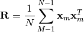
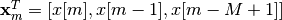
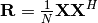

spectral_analysis module¶
- spectral_analysis.compute_autocovariance(x, M=-1)[source]¶
This function compute the auto-covariance matrix of a numpy signal. The auto-covariance is computed as follows

where .
Parameters: - x – ndarray of size N
- M – int, optional. Size of signal block. If M is equal to -1, then M=N/2.
Returns: ndarray
- spectral_analysis.compute_covariance(X, type='real')[source]¶
This function compute the covariance of a numpy matrix.
- If type=’real’, the covariance is computed as

- If type=’comp’, the covariance is computed as 
Parameters: - X – M*N matrix
- type – string, optional
Returns: covariance matrix of size M*M
>>> import numpy as np >>> import spectral_analysis as sa >>> X = np.matrix('1 2; 3 4;5 6') >>> sa.compute_covariance(X) matrix([[ 2.5, 5.5, 8.5], [ 5.5, 12.5, 19.5], [ 8.5, 19.5, 30.5]])
- If type=’real’, the covariance is computed as